Amandeep Malhi

Programmer
Graphic Designer
3D Designer
Programmer
Graphic Designer
3D Designer
Amaris is a local non-profit organization that focuses on five areas of the community; food security, environment, education, youth and equality. Amaris strives to be part of the change by not focusing primarily on monetary donations, but also raising awareness and interacting with the community. I created the new logo for their company as they were transitioning through a rebranding stage.
The creators of Amaris were looking for a colourful and modern style logo for their company. I was the graphic designer they chose to help them create their new look. The first thing that they were looking for was a logo that consisted of many individual smaller parts, but together formed the whole logo which better suited their company beliefs. After sketching out some of their ideas and a few of my own suggestions, we decided that a large ‘A’ would work best for them, with 5 segments which would represent their 5 areas of involvement. Education, food security, environment/sustainability, youth involvement, and diversity.
The founders wanted it to have a burst of colour and something that would be aesthetically simple yet eye-catching. I suggested that we use distinctly different colours for each section that would be able to communicate the topic through its hue, which is to use colour theory and what they universally represent. Environment would be green, education – blue, youth – red, diversity – purple and food security – yellow. The colours would also be approximately the same level of saturation so that they blend together in a similar tone and not have one colour stand out more.
For the final design I made a strong suggestion that the sections of the logo should remain without an outline for a deeper level of unity behind the logo and so that the colours are even and connected to one another, without a harsh black outline cutting through them. I also suggested that the name of the company should be added into the full logo, so those not familiar with the company can put a name to the logo when they see it.